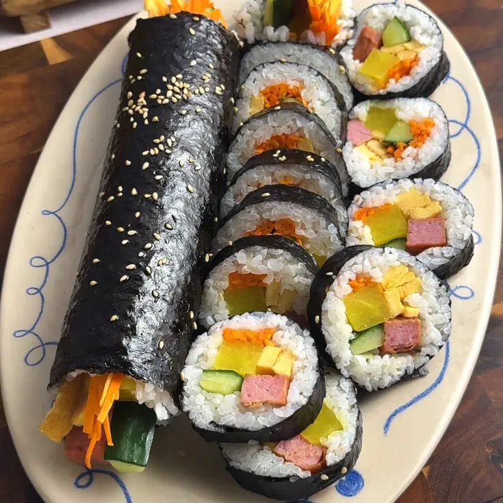
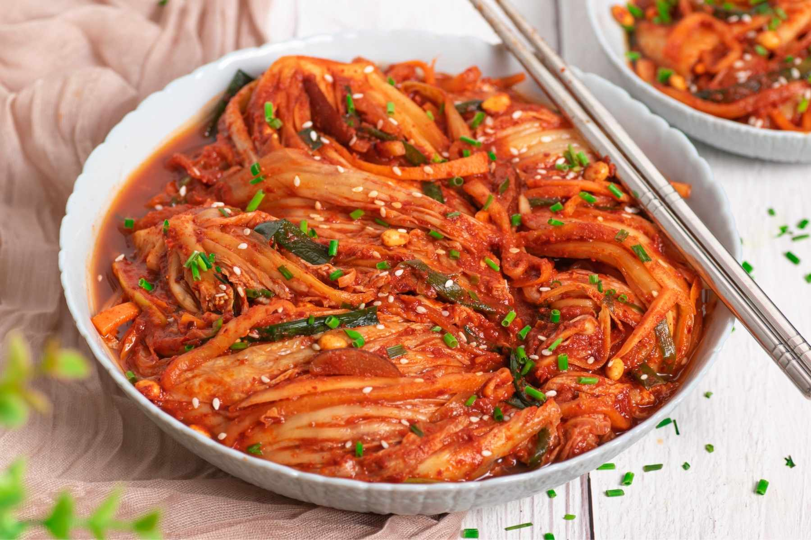

ABOUT US
CHÀO MỪNG ĐẾN VỚI SEOUL FOOD
Seoul Food là không gian dành cho những người yêu thích ẩm thực Hàn Quốc. Chúng tôi mang đến những món ăn quen thuộc của xứ sở kim chi với hương vị đặc trưng, nguyên liệu được lựa chọn kỹ lưỡng và cách trình bày hấp dẫn.
Cùng Seoul Food khám phá những món ăn nổi tiếng và nét văn hóa ẩm thực đặc sắc của Hàn Quốc.
POPULAR DISHES
MÓN ĂN NỔI BẬT

Kimbap
Cơm cuộn rong biển kết hợp cùng rau củ và các nguyên liệu quen thuộc của Hàn Quốc.
Xem thực đơn →
Kimchi
Món ăn truyền thống nổi tiếng của Hàn Quốc với vị cay, chua và hương vị đặc trưng.
Xem thực đơn →KOREAN CULTURE
KHÁM PHÁ VĂN HÓA HÀN QUỐC
Ẩm thực Hàn Quốc không chỉ hấp dẫn bởi hương vị mà còn gắn liền với nhiều nét văn hóa truyền thống đặc sắc.
KHÁM PHÁ NGAY